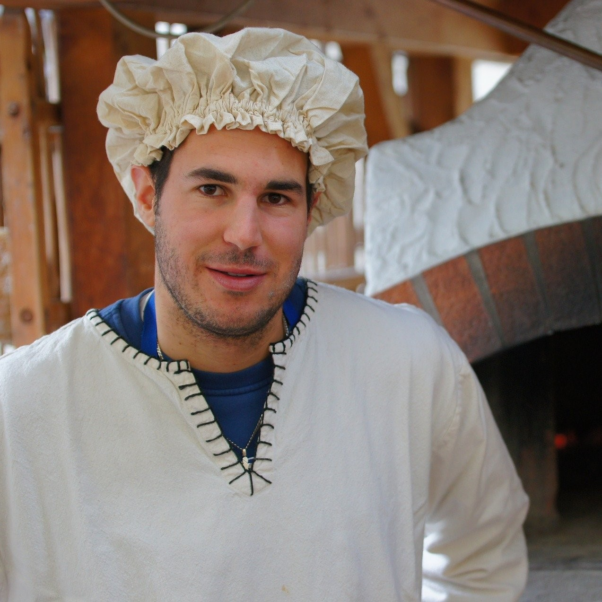
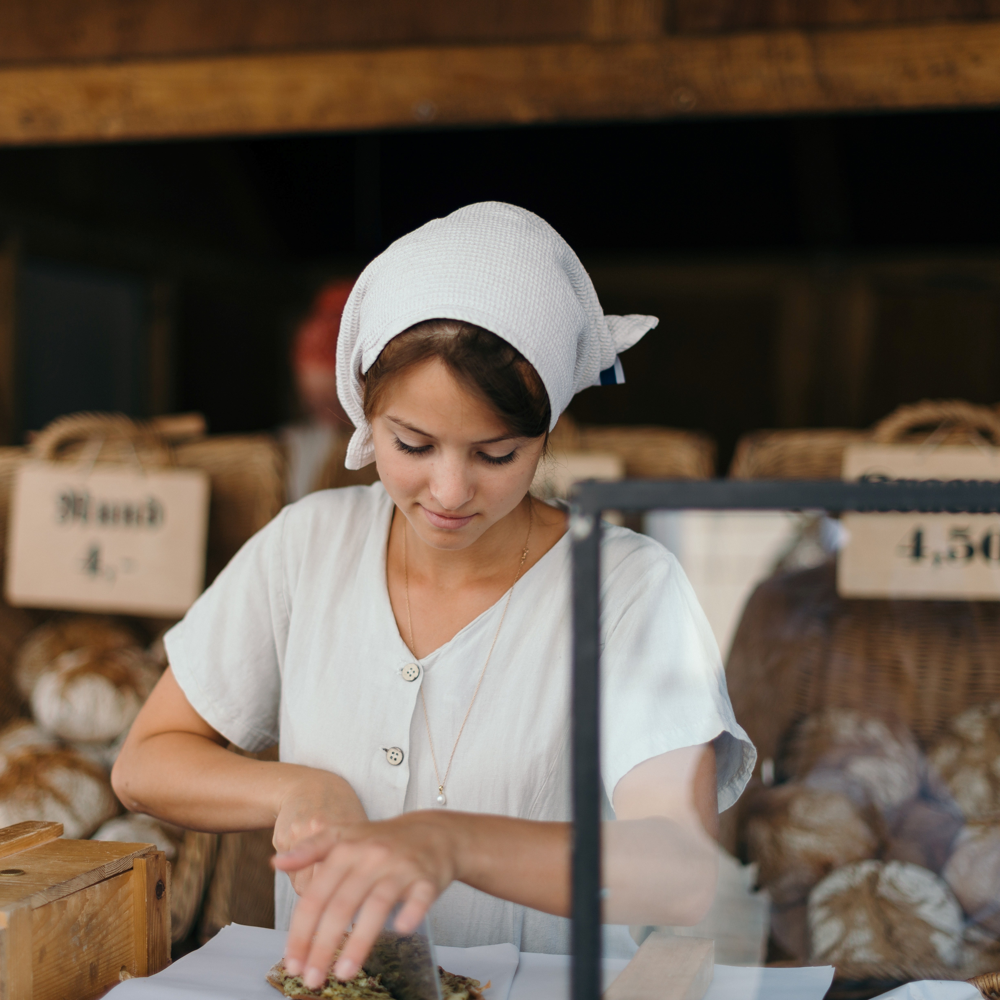
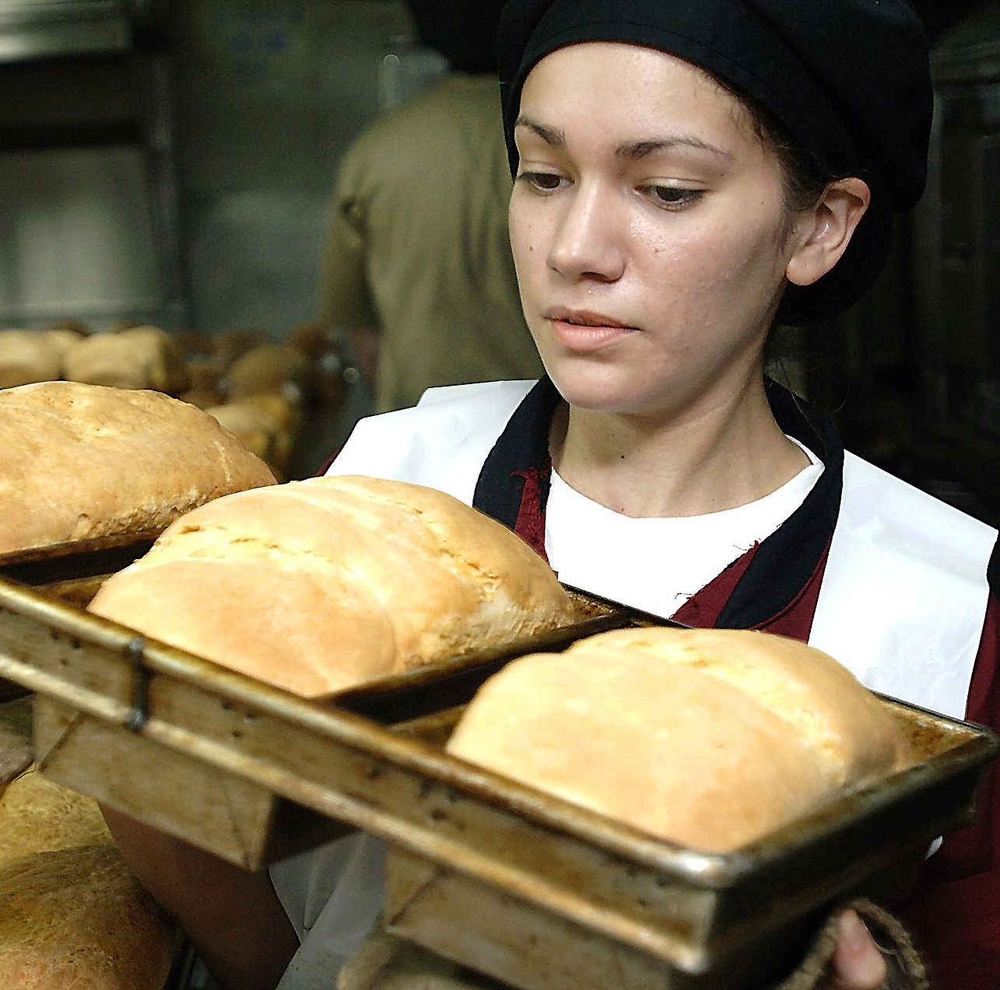

Our Story

The Bakery Bonanza got its humble start in George Harrington’s kitchen. He was an avid baker growing up and learned many recipes from his parents. He later began to master some of his own delicious creations and this sparked a dream to bake for the world. Eventually, he wanted to expand and assembled a small, passionate team that would create memorable experiences for all who stopped by. The Bakery Bonanza has been growing ever since, and offers all from sweet pastries to healthy multigrain breaded delights. Freshness comes first, so you’ll never have to worry about quality here. It’s always a pleasure to bake for you.
Meet the Team

George Harrington

Shelly Lockwood

Ryan Middleton
